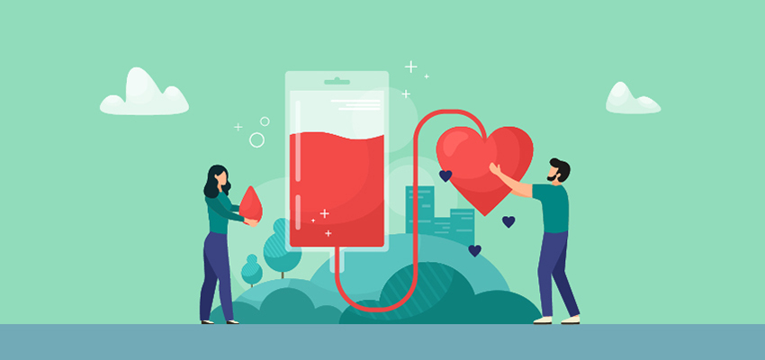
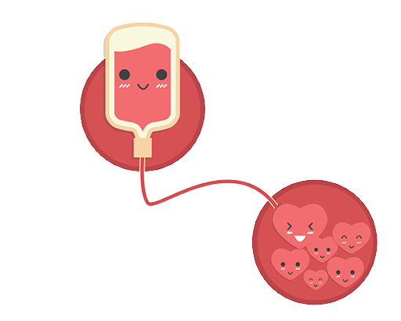
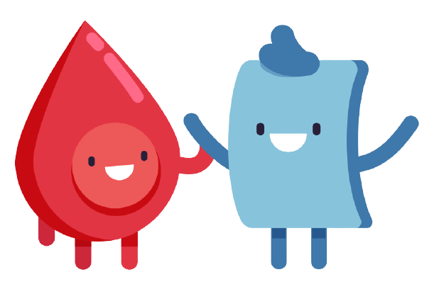

Cads
Trova sedi vicine
Home
Contatti
Accedi
Associazione donazione sangue
Perché il tuo aiuto è importante?

Il dono del sangue è un'esperienza di vera solidarietà, di notevole valore civico ed etico, un gesto di grande generosità, che permette di salvare tante vite umane. Il sangue umano è un prodotto naturale non riproducibile artificialmente, indispensabile alla vita. La donazione è pertanto un atto volontario, gratuito, anonimo e responsabile da ripetere in modo periodico, per gli altri e per te stesso.
Come viene effettuata la donazione?
Il prelievo avviene con l’ausilio di un medico o di un infermiere professionale. La procedura è controllata e realizzata in massima sicurezza. Non c’è rischio di contrarre alcuna malattia infettiva. Il donatore viene fatto accomodare in un lettino, poi si effettua la disinfezione accurata della cute. La sacca di raccolta è posizionata in basso. Qualche minuto dopo la procedura è terminata, viene offerta la colazione e si attende qualche minuto. Tutti i fluidi persi vengono ricostituiti nell’arco di 24 ore. In base al tipo di donazione scelta il tempo necessario può variare. Solitamente la donazione di sangue intero si effettua in 10 – 15 minuti circa.
Scopri di più


Cosa posso donare?
Esistono diverse tipologie di donazione: quella di sangue intero, quella di plasma (plasmaferesi), oppure di piastrine (piastrinoaferesi), e la donazione multipla di emocomponenti. A seconda del tipo di prelievo la durata della donazione varia.
Scopri di più